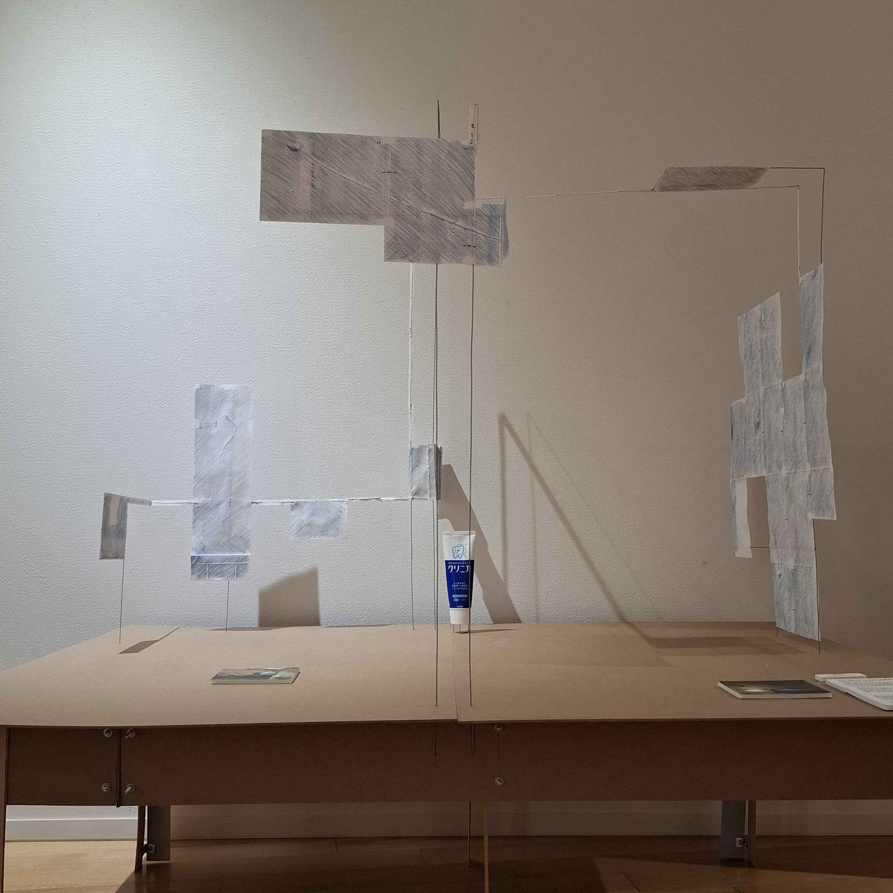
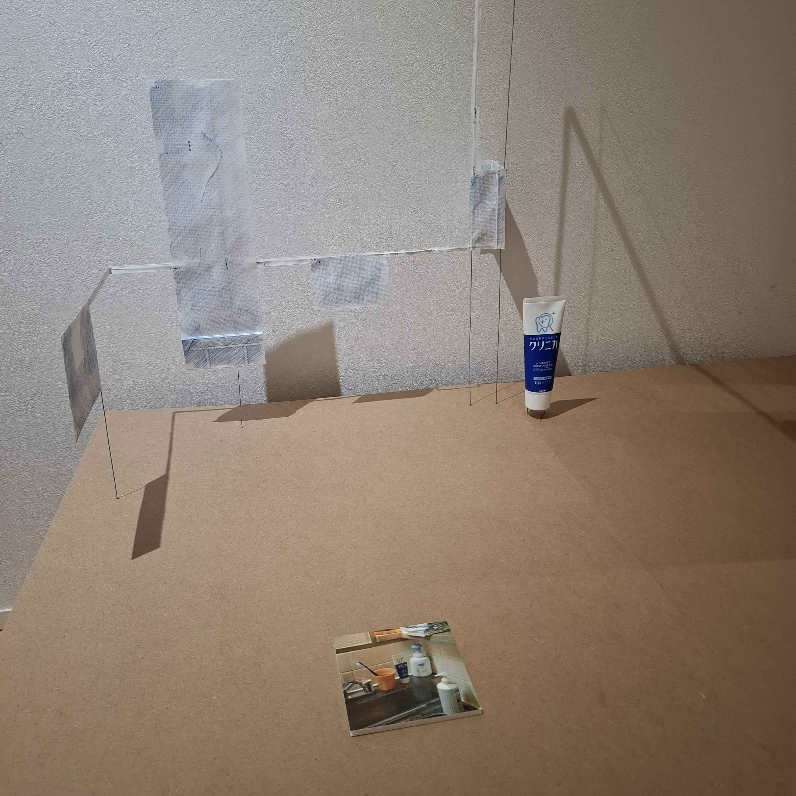
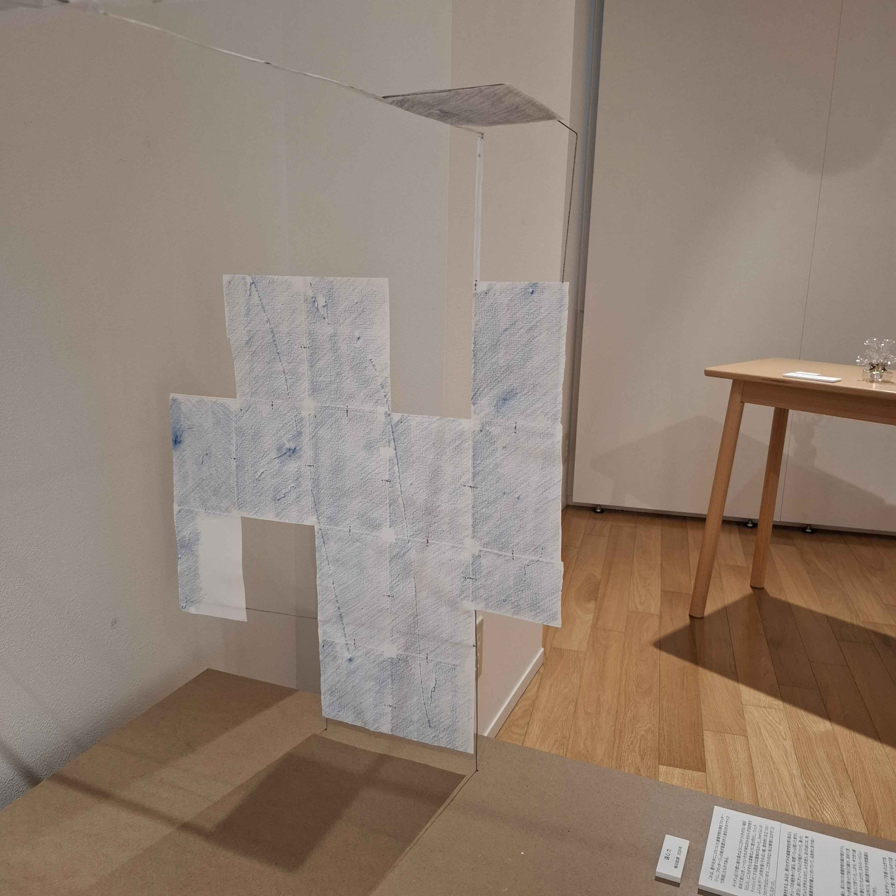
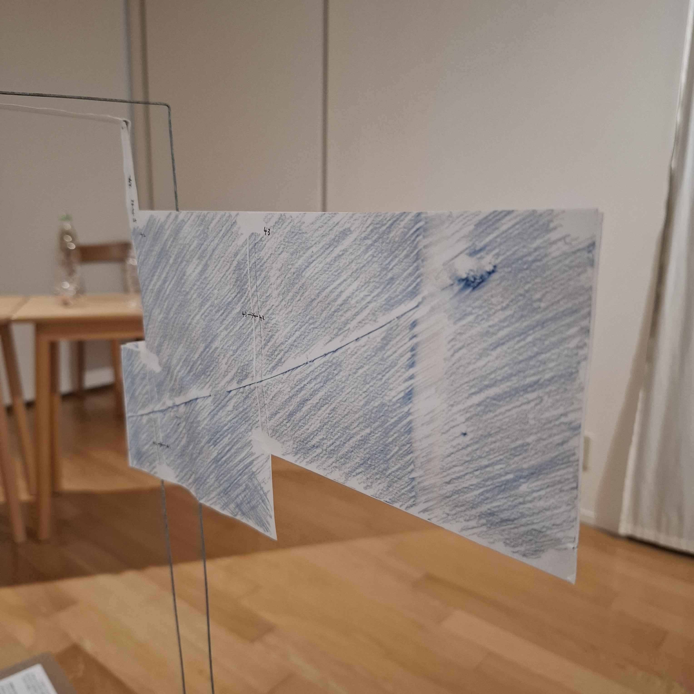
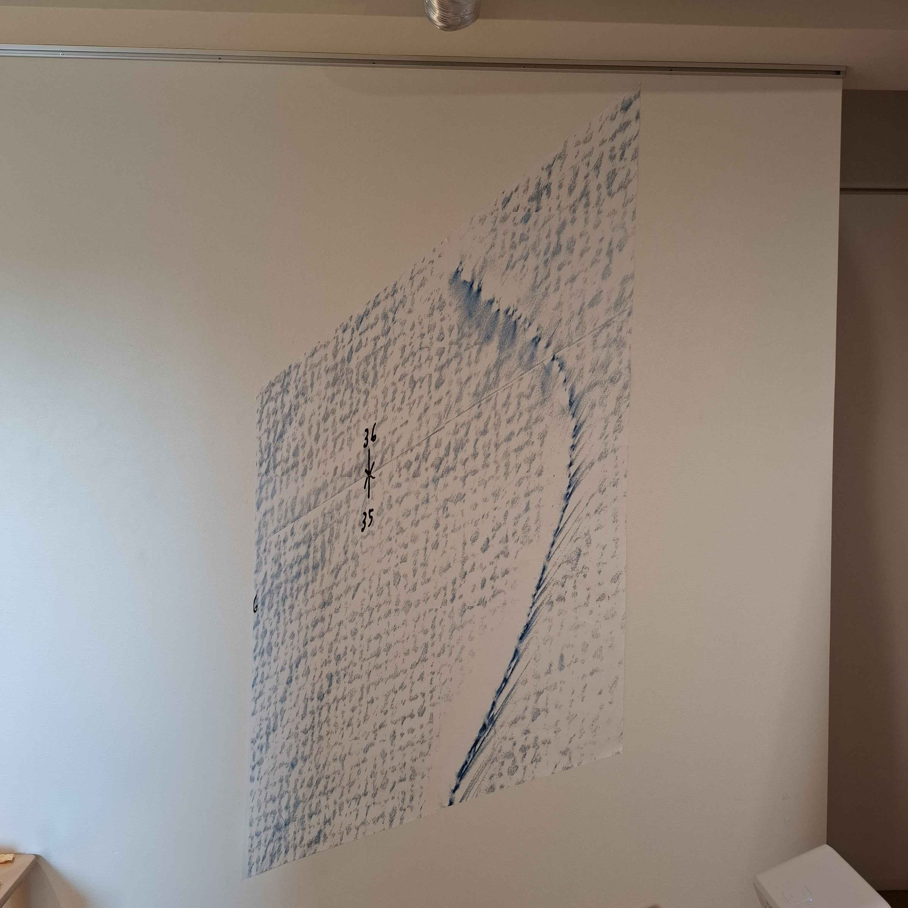
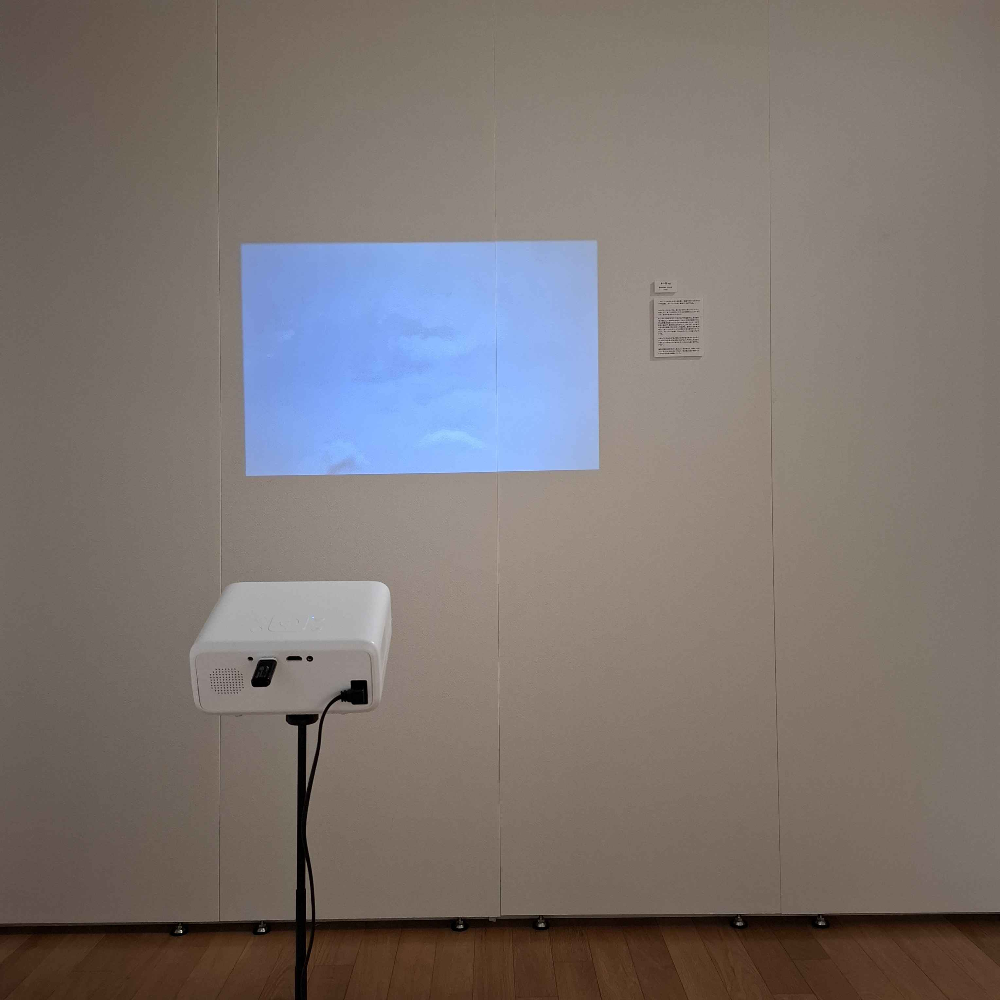

このページでは、自分がこのプロジェクトに関わったことと、制作・展示したものについてまとめる。プロジェクト全体については、プラントショップのウェブサイトの「生産」ページ を参照。（UNDER CONSTRUCTION）
制作物
《遠心力》





これは、壁や天井にこびりついた歯磨き粉の跡をフロッタージュし、フロッタージュの紙が配置された面を2分の1サイズで再現したものである。
キッチン近くの壁に絵の具のようにこびりつくその白い線を初めて見たとき、いったいそれが何なのか分からず拭き取ろうとした。ところがそれは漆喰のように壁と同化し、ウェットティッシュでこする程度では意味がなかった。3mmくらいのふくらみで「？」の形を描くその白い線。致命的に目立つというわけではないので、こだわりのない私は無理にはがすことはしなかった。
歯磨きをする。ある日、残りわずかの歯磨き粉を搾り取るためにチューブの端を持って振る。突然「パン」と乾いた音がしたかと思うと、床にチューブのふたが転がっていた。振った遠心力でふたが外れたのだ。ふたを拾う。近くの床には、飛び散った歯磨き粉が線上に付いていて、反射的に布で拭いた。
！
壁に付いた白い線と、床に付いた歯磨き粉の線が結びつく。壁を確認すると、さっき飛び散ったであろう線が、初めて見たときの線のそばに新たにできていた。しかも、今できた線以外にもいつのまにか増えていたようで、5ストロークくらいが並んでいた。その壁以外にも、棚の扉や天井や炊飯器などで多数見つけることができた。
いつのまに。無論、今までに私がチューブを振ったときである。3か月から半年くらいのスパンで買い替えているので5度くらいだろうか。その間、白い線たちは気づかれずに遠心力で飛ばされた記憶を保ちながらそこに存在した。
《あの雲 ing》

これは、いつも街の上空にある雲を、認識できなくなるまでカメラで追尾し、タイムラプス的に編集したものである。
自分にとってのカメラは、見えているのに見ていないものを知覚したり、見ていると思っていたものを曖昧にしたりするための、身体の延長のようなものだ。
空に浮かぶ雲を見つけ、それをカメラで追跡する。その雲は「あの雲」として認識され始める。しかし、時間が経るにつれて「あの雲」だと思っていたものは形を変容していき、もはや原型を留めず、最終的には消えていく。けれども、その変化はその場で認識するにはゆっくり過ぎる。最初は「あの雲」を塊として見ていたはずが、いつの間にか全く違う形になっていたり、ゲシュタルト崩壊して白と青のパターンを追っていたりする。
今追っているものは「あの雲」とは何か違う気がするけれど、少し前の「あの雲」の形は思い出せない。今までこれを追ってきたという記憶だけがある以上、これからも追い続けるしかない。
輪郭が曖昧な曇り空から見出した「あの雲」は、実際には消えてしまったかもしれないけれど、「あの雲」を追い続けるという自分の身体は継続していた。
生産について考えたこと
「生産」とは、新しいモノや選択肢を増やすことだけではなく、生活や社会が成り立つ条件を維持し、組み替える営みである。人口増加期の生産が拡張や選択に重心を置いていたとすれば、人口減少期の生産は、既存のものを整理し、残し、畳み、再接続することへ移っていく。
維持や整理といったことに焦点を当てるとき、そのプロセスには判断が含まれる。日常生活の中に逸脱したものを見出し、それを消そうとする判断によって、日常生活は保たれている。例えば汚れという逸脱があれば掃除するし、おなかが減ったという逸脱があればご飯を作って食べる。私たちは、この逸脱のように、日常生活のなかにネガティブなものを見出すことによって行動の動機を得ている。逸脱を見出すこと自体が「生産」なのではないだろうか？
制作の動機
上記の通り、自分は、日常生活の中に逸脱を見出し行動の動機を得ること自体が「生産」だと思った。しかし、逸脱を排除することだけが行動ではなく、もっと多様な行動があり得るのではないか？
例えば、「遠心力」では歯磨き粉の跡という逸脱を見出したあと、それをふき取るのではなくフロッタージュするという行動に出た。写真に撮るなどではなくこの手段を選んだのは、壁や天井に張り付いたというその事実自体が重要だと考えたからだった。張り付いた跡に紙をかぶせトレースすることによって、壁や天井という面の存在と歯磨き粉の関係が直接的に保存される。また、フロッタージュした紙をスキャンすることによって、そのスケールを自由に変更・再現することができる。今回は、紙で写し取った表面を2分の1（+α）サイズで再現している。
都市における「遠心力」を探ってみる。青鉛筆のフロッタージュとの類似から、空に浮かぶ雲がすぐに思いつく。しかし雲は歯磨き粉の跡のように固定した形を持たず、壁や天井のように張り付く表面もない。とても曖昧なものなのに、しかし私たちは、「あの雲」「亀みたいな雲」「不気味な雲」といったように、雲を切り分けたり、何かを見出したりすることができる。これは逸脱というほどではないが、曖昧な曇り空から「あの雲」という差異を見出し名づけるという、よりプリミティブな逸脱の発見とも言える。「あの雲ing」では、「あの雲」を一瞬の発見にとどめず、ずっとカメラで追尾することで、それが「あの雲」であるという逸脱の発見を身体的に継続させた。